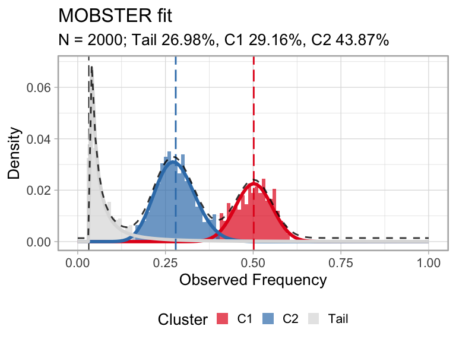

mobster
Giulio Caravagna
January 2020
mobster.Rmdmobster implements a Dirichlet finite mixture model to detect ongoing positive subclonal selection from cancer genome sequencing data. The algorithm works best with high-resolution whole-genome sequencing data (e.g., WGS >100x). The models performs a deconvolution of the site/ allele frequency spectrum of mutation data (the signal), and looks for models with k+1 mixture components to fit the data (k subclones).

The plot shows the fit (right) of a simulated subclonal expansion (left, Muller plot with ggmuller); C2, the subclone at ~30% allelic frequency is outgrowing an ancestral clonal population C1, at ~50% allelic frequency (heterozygous mutations). Their dynamics are consistent with what we expect from the interplay of positive selection between clones and neutral evolution within each clone.
Inspired from both mathematical modelling of evolutionary processes and Machine Learning, the signal is modeled as mixture density with two types of distributions:
-
kBetas to capture the peaks of alleles raising up in frequency in different clones (subclones enjoying positive selection, and the clonal cluster); -
1Pareto Type-I power law to model within-clone neutral dynamics, which is the distribution predicted by theoretical Population Genetics.
mobster fits can be computed via moment-matching (default) or maximum-likelihood, the former being much faster Model selection for the number of components can be done with multiple likelihood-based scores such as the BIC, and its entropy-based extensions ICL and reICL, a new variation to ICL with reduced-entropy.
S3 objects are defined to perform easy visualization of the data and aid comparison of different fits; parametric and non-parametric bootstrap routines are also available to assess the confidence of each parameter (bootstrap quantiles) and the model (overall model frequency).
This is a model-based approach to analyse cancer data, meaning that a power law tail is used to integrate evolutionary dynamics in this traditional clustering problem. Results from mobster deconvolution can be used to reconstruct the clonal architecture of a tumour (subclonal deconvolution) and identify patterns of functional heterogeneity (subclones under positive selection).
Available vignettes
We suggest you to read about some example data and then move on to plot the fits of your analysis.
That is the basics, but if you want to do more you can use your fits to compute dN/dS statistics from the clusters, or extract Population Genetics parameters of tumour growth. You should also assess the confidence of your estimates via the bootstrap.
If you are confident about your clusters, you can compute the clone trees that fit your MOBSTER analysis.
For a real case study with mobster, check the Supplementary Data released with our paper.
Check out also the evoverse pipelines that use mobster.